UDN
Search public documentation:
LightmassCH
English Translation
日本語訳
한국어
Interested in the Unreal Engine?
Visit the Unreal Technology site.
Looking for jobs and company info?
Check out the Epic games site.
Questions about support via UDN?
Contact the UDN Staff
日本語訳
한국어
Interested in the Unreal Engine?
Visit the Unreal Technology site.
Looking for jobs and company info?
Check out the Epic games site.
Questions about support via UDN?
Contact the UDN Staff
UE3 主页 > 光照 & 阴影 > Lightmass静态全局光照
UE3 主页 > 关卡设计师 >Lightmass静态全局光照
UE3 主页 > 光照美工人员 > Lightmass静态全局光照
UE3 主页 > 关卡设计师 >Lightmass静态全局光照
UE3 主页 > 光照美工人员 > Lightmass静态全局光照
Lightmass静态全局光照
文档变更记录: 由 Daniel Wright 创建。
概述
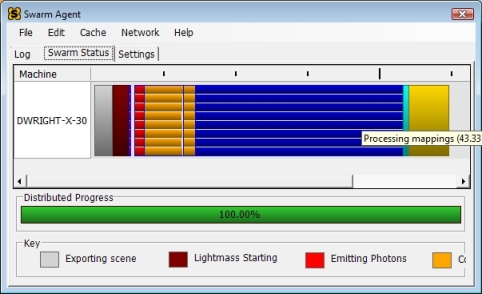
请参照 Unreal Swarm页面获得更多信息。版本
遗留支持
在新的地图中使用旧的UE3光照
自版本QA_APPROVED_BUILD_JUNE_2009后，新的地图将默认使用Lightmass全局光照。这由在UnrealEd中的View->World Properties->Lightmass下的bUseGlobalIllumination 控制。也可以通过UnrealEd中的光照构建对话框中获得。要获得旧的UE光照，只要简单地禁用 bUseGlobalIllumination 即可。
转换一个现有地图来使用Lightmass
在Lightmass出现之前创建的关卡在集成时将会设置bUseGlobalIllumination 为 false ，且它将继续使用旧的UE3静态光照方法。这里是转换现有关卡所需要的步骤:
- 设置
bUseGlobalIllumination为 true 或者勾选此项。 - 在您关卡中需要详细的全局光照部分的周围放置一个或多个LightmassImportanceVolumes。这些相结合的体积的半径将对您的光照构建时间会产生巨大的影响，所以请尝试尽量紧密地包围您关卡中最重要的部分。
- 禁用或删除关卡中任何填充光源。Lightmass将计算光线反射，所以您仅需要保持主光源即可。天空光源对于Lightmass没有太大作用，它们仅会降低您的潜在差异，如果天空光源是作为一个环境条件使用的，最好也禁用它们。当然，可以保留填充光源以便获得更多的美感控制。
Lightmass功能
区域光源和阴影
在旧的UE3静态光照中，光源没有任何表面区域。所有的光源都被当做从一个单独的点 (或者一个具有唯一方向的定向光源)发出来进行处理。 区域阴影是通过过滤光照贴图中的阴影效果来进行近似计算的，这意味着阴影的半影的尖锐程度依赖于光照贴图分辨率，并且在具有同样光照贴图分辨率的所有平面上半影的大小是一样的。 使用Lightmass，所有的光源在默认情况下都是区域光源。点光源和聚光源所使用的形状是球型，它的半径通过使用在LightmassSettings下的LightSourceRadius进行设置。定向光源使用一个圆盘，被放置在场景的边缘。控制阴影的柔和度的两个因素中的之一是光源的大小，光源越大将会产生更加柔和的阴影。另一个因素是从接受阴影位置到阴影投射物之间的距离。随着这个距离的增加，区域阴影将会变得越柔和，就像现实生活中一样。 第一个图片是一个使用旧的UE3静态光照的定向光源，半影的大小在每处都是一样的。第二个图片是由Lightmass计算出的区域阴影，阴影的尖锐程度使用光源的大小和遮光板的距离控制。注意柱子的阴影在柱子越接近地面的地方变得越来越尖锐。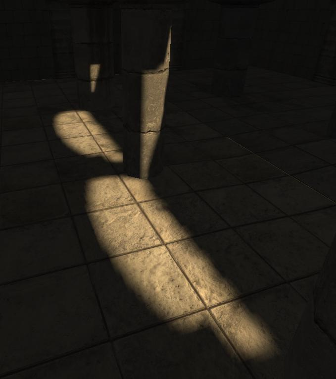
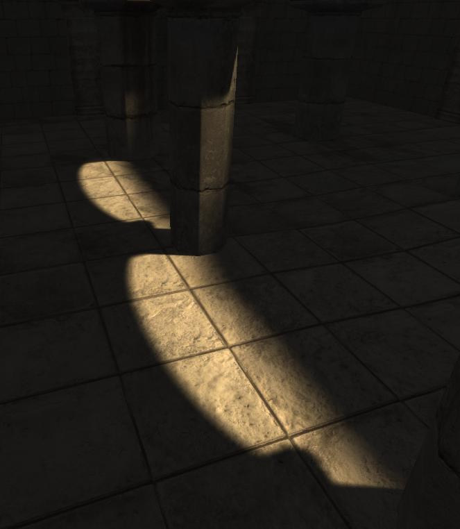
点光源和聚光源的半径画在了黄色线框里，但是光源的影响半径画在青色线框里。大多数情况下，您要确保光源不会和任何投射阴影的几何体相交，否则光源将在那个几何体的两侧都投射光照。
带符号的距离场阴影
Lightmass能够以不同的编码方式生成预计算阴影，请查看DistanceFieldShadows(距离场阴影)页面获得更多信息。漫反射的交互反射
到目前为止，漫反射的交互反射是在视觉上最重要的全局光照效果。光源默认使用Lightmass进行反射，您的材质上的Diffuse(漫反射)因素将会控制在各个方向上将反射多少光线(及什么颜色)。这个效果有时被称为颜色扩散。请记住漫反射交互是入射光线将在所有方向均匀地反射，这就意味着观看方向及位置的不同对于看到效果没有影响。 这里是一个使用单一的定向光源且仅显示直接光照的情况下使用Lightmass构建的场景。注意阴影半影的尺寸是如何随着遮光板的距离变化的。没有被光源直接照射到的地方是黑色的。这便是没有全局光照的结果。 这是第一次漫反射全局光照的效果。请注意左侧椅子下面的阴影，这被称为间接阴影，因为它是间接光照的阴影。漫反射的反射光线的亮度和颜色由入射光线及同光源进行交互的材质的漫反射条件决定。每次漫反射光线比前一个个都会更暗，因为光源的某些光线会被表面吸收而不是被反射。由于柱子的基部更加靠近直接光源区域，所以它们比其它的表面获得了更多的间接光源。
这是第一次漫反射全局光照的效果。请注意左侧椅子下面的阴影，这被称为间接阴影，因为它是间接光照的阴影。漫反射的反射光线的亮度和颜色由入射光线及同光源进行交互的材质的漫反射条件决定。每次漫反射光线比前一个个都会更暗，因为光源的某些光线会被表面吸收而不是被反射。由于柱子的基部更加靠近直接光源区域，所以它们比其它的表面获得了更多的间接光源。
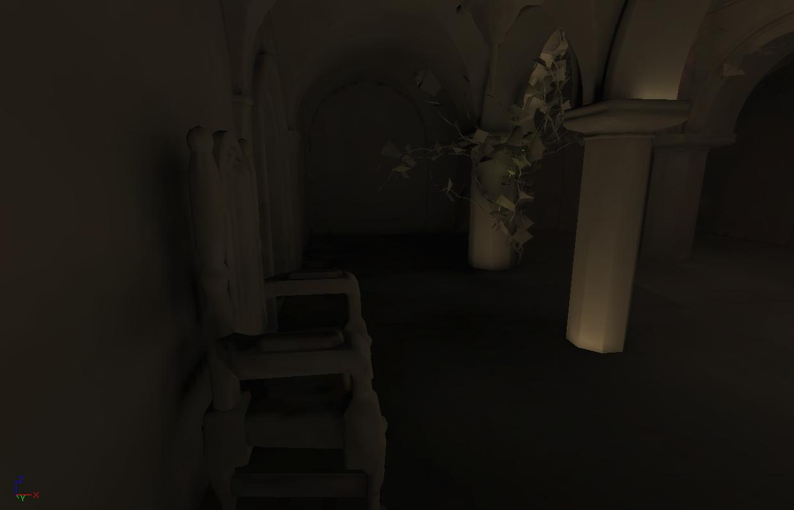
这是第二次漫反射。光源已经变得更加的衰弱并且将最终变得分散。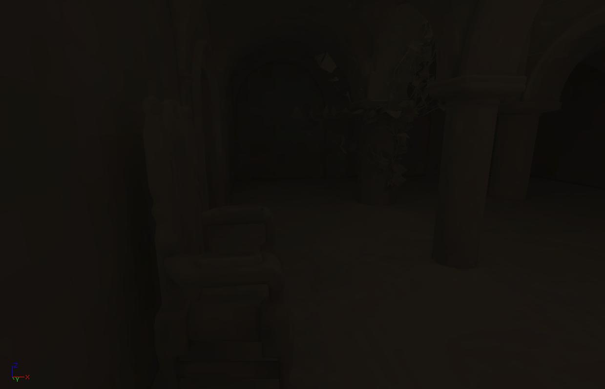
这里是组合了4个漫反射的场景。模拟全局光照创建了比手动放置填充光源更加详细并真实的光照。尤其，间接阴影是不可能通过使用填充光源实现的。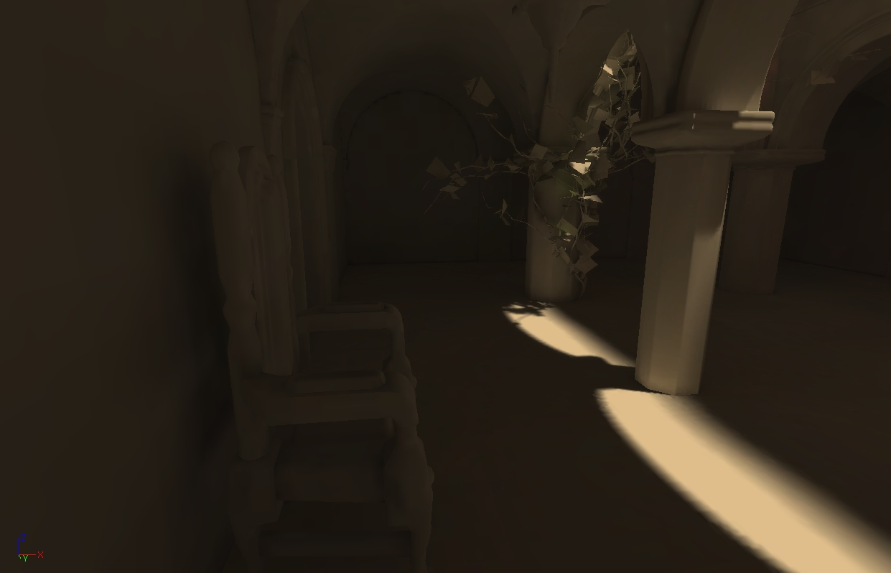
反射光线获得底下材质的漫反射颜色，正如您在下面所看到的。这便是术语'color bleeding(颜色扩散)'产生的原因。颜色扩散在使用高饱和颜色处是最明显的。您可以通过提高在图元、材质或关卡中的DiffuseBoost来夸大这个效果。

角色光照
Lightmass在LightmassImportanceVolume(Lightmass重要体积)内在均匀的3d网格中以较低的分辨率放置样本，也在角色可能会在上面行走的向上的平面上以较高的分辨率放置样本。每个光照样本可以从各个方向捕获间接光照，但是不捕获直接光照。 第一个图片是地面上放置的光照样本在调试状态下呈现的效果，第二个图片是同一场景在带光照模式下的效果。注意在红色毛毯上的样本是如何获得红色的反射光线的。样本看上去是单一的颜色，但它们确实在从各个方向捕获光照。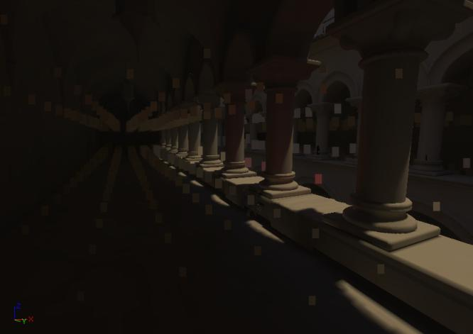
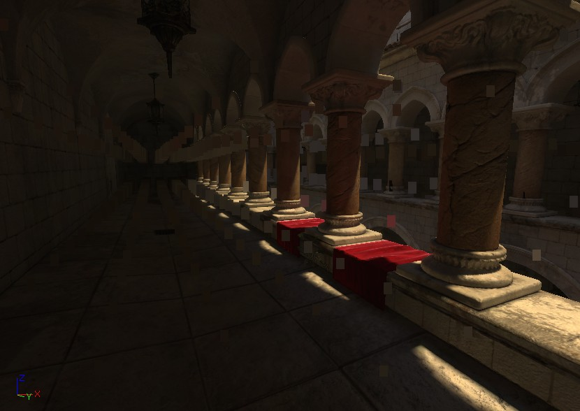
LightEnvironments(光照环境)然后在使用这些光照样本的actor的位置上查找间接光照。这些间接光照影响光照环境阴影的颜色，但不影响方向。 以下角色是被楼梯下面的第一次漫反射全局光照照亮的效果。
限制
- 目前光照样本会使用很多的内存，它们的放置可以通过学习更多的关于人物的哪个部分需要详细的间接光照的知识来进行优化(即游戏区域)。
- 动态地照亮没有使用光照环境的物体将仅受到直接光照的影响。
- 在LightmassImportanceVolume(Lightmass重要体积)之外的光照环境将有黑色的间接光照。
源于自发光的网格物体的区域光源
您应用到静态物体的任何材质的自发光输入都可以用于创建网格物体区域光源。网格物体区域光源和点光源类似，但是它们可以有任何形状及在整个光源表面可以有任意亮度。每一个活动的自发光贴图像素将根据那个贴图像素的亮度在围绕贴图像素法线的半球内发光。每个自发光贴图像素的邻接组将会被认为是一个可以发出一种颜色的网格物体区域光源。 第一个图片仅显示了底下材质的自发光，第二个图片显示了从这些自发光贴图像素创建而来的4个网格物体区域光源的效果(创建了4个光源是因为活动自发光贴图像素有4个邻接块)。
 默认情况下，网格物体区域光源将不会从自发光区域进行创建。要想启用它们，可以任何图元组件的 LightmassSettings组下找到bUseEmissiveForStaticLighting标志并选中它。对于BSP表面，这个选项在表面属性中。
默认情况下，网格物体区域光源将不会从自发光区域进行创建。要想启用它们，可以任何图元组件的 LightmassSettings组下找到bUseEmissiveForStaticLighting标志并选中它。对于BSP表面，这个选项在表面属性中。

EmissiveLightFalloffExponent 设置允许您控制发射出的光线的衰减情况。它的表现和点光源的衰减指数类似，大的指数将导致光源随着向光源影响半径前进衰减得更快。网格物体区域光源的影响半径是由光源亮度及光源自发光表面区域的大小来自动地决定的。 = EmissiveBoost= 可以缩放所有自发光贴图像素的亮度，这个亮度也会对影响半径产生影响。
注意网格区域光源会增加构建时间，它们对构建时间产生的影响和点光源一样。具有较小的影响半径的网格物体光源在进行光照计算时将会更快。
限制
- 具有很多三角形的网格物体上的网格物体区域光照将会增加构建时间。对于包含三角形数量大于3000的网格物体将会产生一个警告；对于包含的三角形数量大于5000的网格物体，无论bUseEmissiveForStaticLighting的设置是什么都不会将其用作为网格物体区域光源。
半透明阴影
光源穿过投射静态阴影的网格物体的半透明材质将会丢失一些能量，从而导致半透明阴影。半透明阴影颜色
穿过材质的光线量称为Transmission (它们和材质编辑器中在不透明的材质上进行操作的 TransmissionColor 及 TransmissionMask 不同。)，每种颜色的通道的范围是0到1。值0将会是完全地不透明，值1则意味着入射光线穿过且没有受到影响。因为Transmission没有材质输入，所以当前它从其他的材质输入输入衍生而来，如下所示：
- Lit materials(带光照的材质)
- BLEND_Translucent and BLEND_Additive: Transmission = Lerp(White, Diffuse, Opacity)
- BLEND_Modulate: Transmission = Diffuse
- Unlit materials(无光照的材质)
- BLEND_Translucent and BLEND_Additive: Transmission = Lerp(White, Emissive, Opacity)
- BLEND_Modulate: Transmission = Emissive
半透明阴影的尖锐度
有几个控制半透明阴影尖锐度的因素。 在第一个图片中，使用了一个大的光源(LightSourceAngle为5 的定向光源)；在第二个图片中，使用了一个小的光源(LightSourceAngle为0)。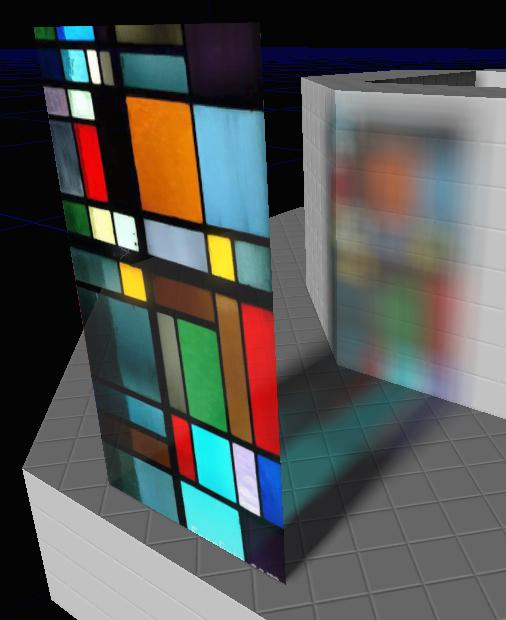
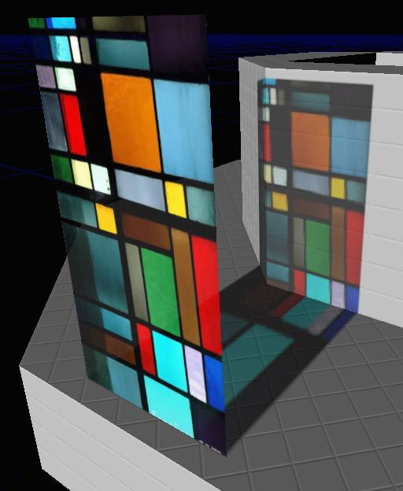
在第一个图片中，使用了一个小的光源，但是光照贴图分辨率太低以至于不能捕获到尖锐的半透明阴影。在第二个图片中，导出材质的分辨率(由材质编辑器中的ExportResolutionScale 控制)太低以至于不能捕获到尖锐的阴影。
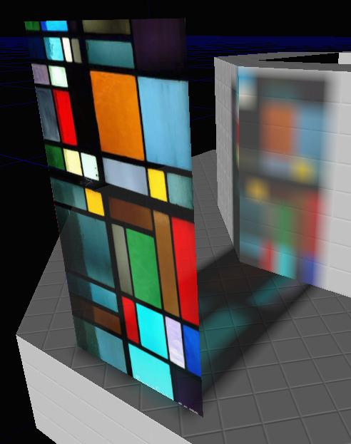
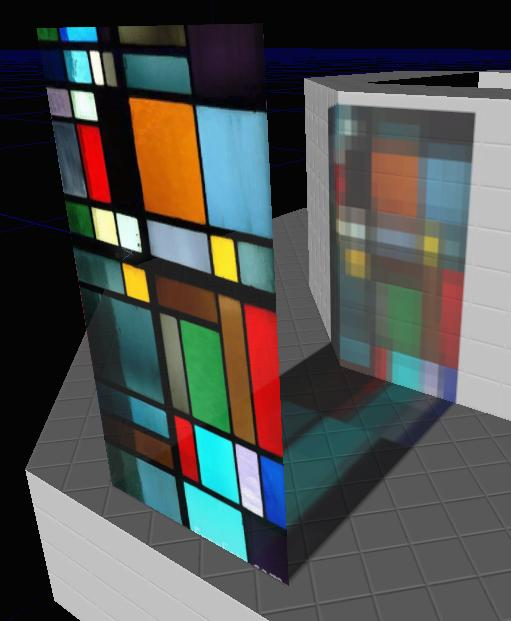
间接光源也会受到半透明材质的影响。这个图片中的窗子基于它的Transmission来过滤了入射光线，然后那个光源使用改变的颜色在场景的周围进行反射。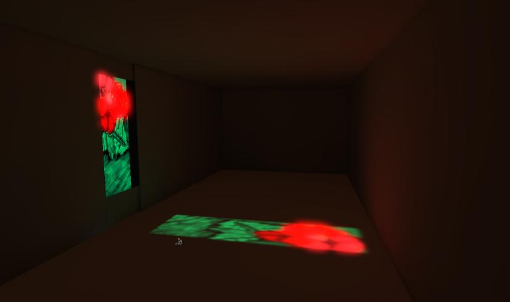
限制
- 目前半透明材质还不能散设光线，所以它们将不能把颜色扩散到它们周围的物体上。
- 目前第一次漫反射不会受到半透明的窗子的影响。这意味着穿过透明材质的第一次反射的间接光源将不会通过材质的Transmission进行过滤。
- 目前，不支持折射(光线传播时被改变方向吸收) 。
蒙板阴影
Lightmass在计算阴影时考虑了BLEND_Masked材质的不透明蒙板。在编辑器视口中被省略的材质部分也不会产生任何阴影，它允许从树木和植被中获得更加详细的阴影。

环境遮挡
Lightmass可以自动地计算详细的间接阴影，但是为了达到艺术目的或者提高场景中的接近度的感觉，夸大间接阴影是有帮助的。 环境遮挡是您从具有均匀光照的上半球上获得的间接阴影，就像阴暗的天空。Lightmass支持计算环境遮挡，并可以把它应用到直接及间接光照上，然后把它烘焙到光照贴图中。环境遮挡在默认情况下是禁用的，可以通过在View(视图)->World Properties(世界属性)->Lightmass 中勾选bUseAmbientOcclusion 来启用它。
第一个图片的场景是具有间接光照但是没有环境遮挡的效果。第二个图片的场景还是和刚才一样的场景，但是它的直接和间接光照都应用了环境遮挡，请注意查看物体结合处的地方变暗了。
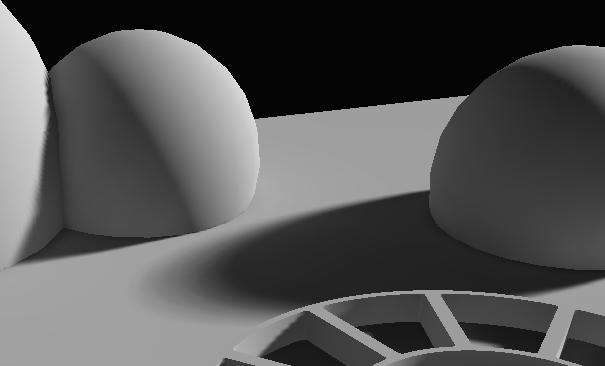
 Ambient Occlusion(环境遮挡)设置:
Ambient Occlusion(环境遮挡)设置: - bVisualizeAmbientOcclusion(是否显示环境遮挡) -当构建光照时，仅使用遮挡因素覆盖光照贴图。这对查看具体的遮挡因素及比较不同的设置的效果是有用的。
- MaxOcclusionDistance(最大遮挡距离) - 一个物体对另一个物体产生遮挡的最大距离。
- FullyOccludedSamplesFraction(完全被遮挡的样本片段) -为了达到完全遮挡，所采用的必须被遮挡的样本的部分。注意还有一个基于每个图元的FullyOccludedSamplesFraction，它允许控制一个对象对其他对象的遮挡程度。
- OcclusionExponent(遮挡指数) -指数越高对比越明显。
- 第一个图片: 默认的环境遮挡设置(MaxOcclusionDistance为200、FullyOccludedSamplesFraction为1.0、OcclusionExponent为1.0)
- 第二个图片: MaxOcclusionDistance为5。删除了低频率遮挡，仅留下角落中的遮挡。
- 第三个图片: FullyOccludedSamplesFraction的值为0.8。遮挡在整个范围内逐渐变暗，遮挡大于等于80%的区域被设置为全黑色。
- 最后一个图片: OcclusionExponent 为2。遮挡从中间范围更快地转换为饱和的黑色，遮挡被推向了角落。


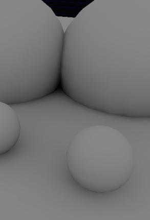
当NumIndirectLightingBounces大于0的情况下进行光照构建时，Ambient Occlusion(环境遮挡)几乎没有消耗性能。限制
- 如果要使Ambient Occlusion(环境遮挡)的效果看上去很好，则需要使用一个相当高的贴图分辨率，因为它在角落的变化很快。当由于顶点通常在环境遮挡最高的角落导致网格物体的大部分区域将会变暗时，顶点光照贴图将会产生奇怪的效果。
- 环境遮挡的在预览级别下进行构建的质量不会很好，因为环境遮挡需要很多密集的光照样本(就像间接阴影一样)。
使用Lightmass来获得最佳质量
使光照变得显而易见的
漫反射贴图
在渲染过程中，带光照像素的颜色被作为为Diffuse* Lighting(漫反射光照)，所以漫反射的颜色直接影响着光照的视觉效果。高对比度的或较暗的漫反射贴图使光照很难被注意到，然而低对比度、中间范围的漫反射贴图将会使光照的细节进行完整的显示。 第一个图片中场景使用中间范围漫反射贴图，第二个图片的场景也是使用Lightmass进行构建，但是使用了噪声和较暗的漫反射贴图，比较这两个场景中光照的清楚度。第二个图片的场景中只有最高频率的改变效果是显著的，就像阴影变换一样。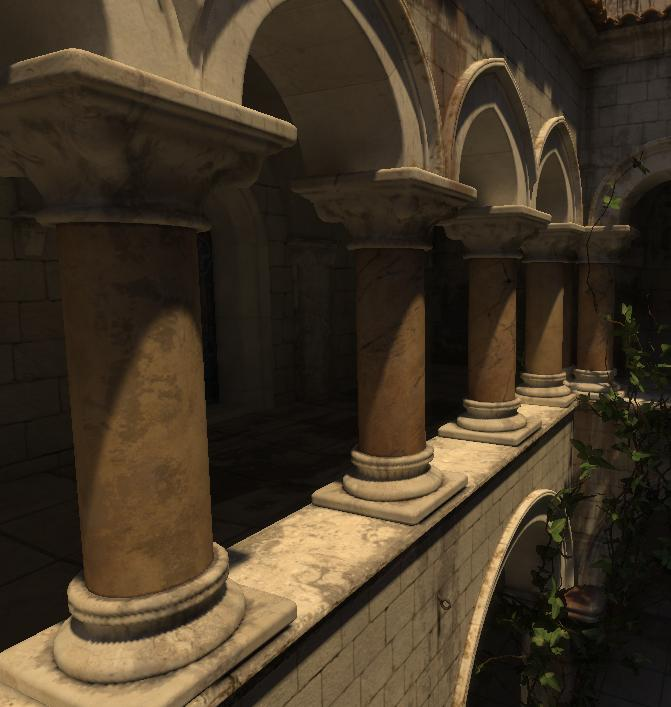
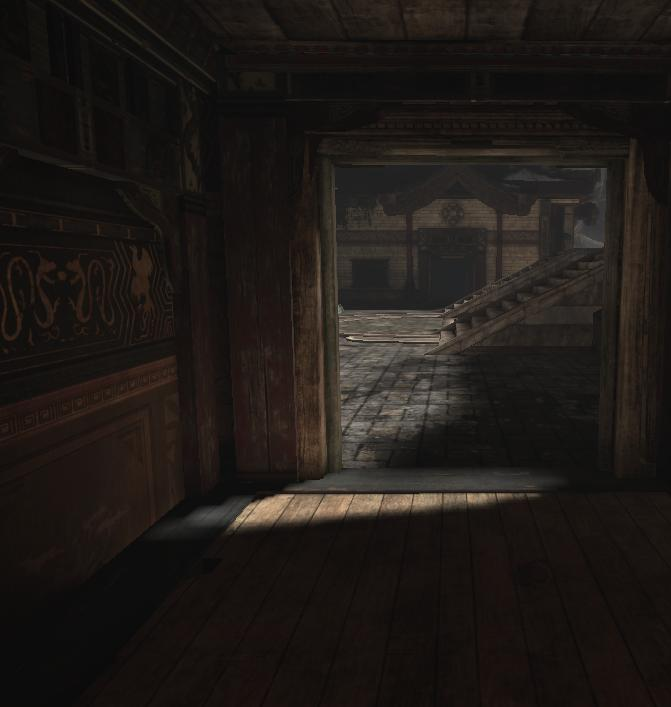
无光照视图模式对于查看Diffuse的信息是有用的。第一个图片中的场景在Unlit（无光照）视图模式下看上去更单调，这意味着是光照正在完成所有的工作，最终像素颜色的变化主要依赖于光照的不同。 请参照视图模式页面获得更多信息。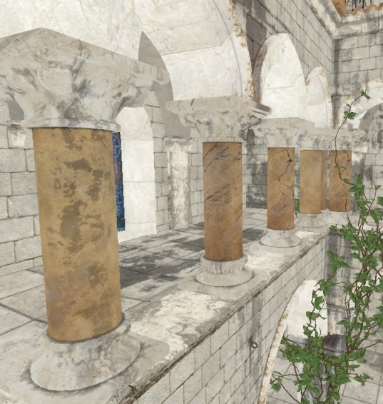
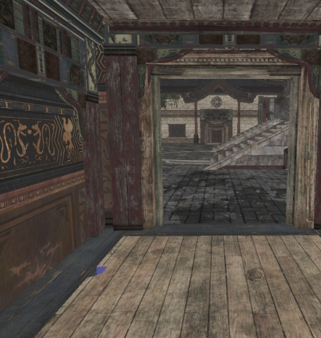
在无光模式下的图片的几个部分上使用编辑器的颜色选择器，我们会看到第一个图片中场景的漫反射值大约是0.5，然而第二个图片中场景的漫反射值大约是0.8。在Photoshop中查看这些无光模式下的图片的柱状图会使您更好地看到这些漫反射贴图的分布。*注意： Photoshop 是在gamma 空间中显示您的颜色值，所以值186 (.73)事实上是黑色和白色之间的部分，而不是值127 (.5)* 。第一个图片显示了要获得显著地光照效果时柱状图的样子。

光照设置
- 避免Skylights(天空光源)！ Skylights(天空光源)会给您的关卡添加一个不变环境条件，它会降低在非直接光照区域中的差异。
- 设置光源，以便在直接光照区域和间接光照区域有较高的对比。这个对比将使它很容易地找到阴影变换发生的位置，并使您的关卡具有更好的深度感。
- 设置光源，以便明亮的区域不会太明亮，而黑暗的区域也不会是完全地变黑，但是仍然可以看到细节。在最终的目标显示上检查黑暗区域是很重要的。
提高光照质量
光照贴图分辨率
具有高分辨率的光照贴图是获得详细的、高质量的光照贴图的最好方法。顶点光照贴图是依赖于细分的，所以它们通常不能像区域阴影那样展现光照细节，它们仅能显示网格物体所在区域的大体颜色。使用高分辨率的光照贴图会由于占用了更多的贴图共享内存及增加构建时间而带来性能上的下降，所以这是一个妥协。理想状态下，高光照贴图分辨率应该分配在视觉效果影响比较重要的区域周围及频繁出现阴影的地方。Lightmass Solver质量
Lightmass Solver的设置是基于在Lighting Build Options(光照构建选项)对话框中所要求的构建质量来自动地进行相应设置的。Production(产品级别)将会提供足够好的质量，以至于应用漫反射贴图的失真都不会被明显地察觉。有一个设置将会对质量产生巨大的影响，它便是StaticLightingLevelScale。降低缩放因数将会产生更多的间接光照样本，它会以增加构建时间的代价来提高间接光照和阴影的质量。在大多数情况下，这仅在增加大关卡的光照缩放因数时有用。获得最佳的光照构建时间
- 仅在拥有高频率(变化很快)的光照区域内使用高分辨率光照贴图。降低BSP及不在直接光照中或不受尖锐的间接阴影影响的静态网格物体的光照贴图分辨率。这样会在最容易引起注意的区域产生高分辨率阴影。
- 玩家永远不会看到的表面应该设置为尽可能低的光照贴图分辨率。
- 用一个LightmassImportanceVolume(Lightmass重要体积)来包含最重要的区域(仅游戏可活动区域的周围)。
- 在整个地图上优化光照贴图分辨率，以便网格物体的构建时间更加均衡。使用LightmassTools#LightingTimings对话框来查找光照构建最慢的物体。光照构建的速度永远不会快于那个构建速度最慢的单一物体，无论有多少个机器在同时进行分布式构建。
Lightmass设置
Lightmass重要体积
许多地图中的网格物体都在编辑器网格的边缘的外面，但实际上需要高质量光照的活动区域(playable area)是非常小的。Lightmass基于关卡的大小来发射光量子，所以这些不易被引起注意的的网格物体将会大大地增加需要发射的粒子的数量，并且会增加光照的构建时间。LightmassImportanceVolume控制Lightmass发射光量子的范围，允许您将粒子集中在需要详细间接光照的区域。在重要体积之外的区域仅获得低级质量的间接反射光照。 第一个图片显示的是MP_Jacinto的线框俯视图。实际上需要高质量光照的活动区域是在中央的小绿色斑点。 第二个图片中显示了活动区域MP_Jacinto的封闭区域，选择了正确的LightmassImportanceVolume设置。LightmassImportanceVolume降低了光源的区域半径，从80,000个单位到10,000个单位，要照亮的面积减少了64倍。
 LightmassImportanceVolumes的创建和其它体积的创建类似，在您想创建体积的地方放置一个构建画刷，然后右击Add Volume(增加体积)按钮并选择LightmassImportanceVolume，如下所示：
LightmassImportanceVolumes的创建和其它体积的创建类似，在您想创建体积的地方放置一个构建画刷，然后右击Add Volume(增加体积)按钮并选择LightmassImportanceVolume，如下所示：
 在这一点上，使用多个能将要照亮的区域更紧密地包围起来的LightmassImportanceVolumes是有好处的，因为光照是使用包围所有重要体积的包围盒进行处理的。
在这一点上，使用多个能将要照亮的区域更紧密地包围起来的LightmassImportanceVolumes是有好处的，因为光照是使用包围所有重要体积的包围盒进行处理的。
光照构建选项对话框
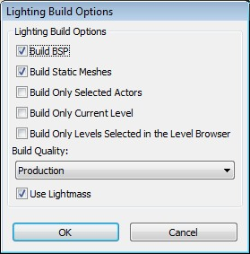
- Build Quality(构建质量) -控制构建光照要花费多长时间及在哪种光照质量下进行计算。Preview(预览级别)的构建速度最快、质量最低(但仍然可以表现效果)，而Production(产品)级别的构建速度最慢、质量最高，应该用来作为发行的级别。每种质量设置都会比它上面的设置在运行上会慢三倍。Preview (预览级别)及 Medium(中间级别)将会显示颜色误差，但是高级别和产品级别则不显示。
- Use Lightmass(使用Lightmass ) - 仅在这次光照构建中覆盖关卡中的bUseGlobalIllumination(是否使用全局光照)选项。*注意: 关卡的bUseGlobalIllumination 选项不会永久地被改变。
世界设置

- bUseGlobalIllumination(是否使用全局光照) -关卡是否应该使用Lightmass或者旧版本的UE3的直接光照。自从QA_APPROVED_BUILD_JUNE_2009版本开始，新的地图中此项默认为真，旧的地图中此项默认设置为假。
- StaticLightingLevelScale(静态光照关卡缩放) - 关卡的缩放和游戏的缩放是成比例的。这用于决定在光照计算中要详细到何种程度，较小的缩放比例将会大大地增加构建时间。默认为1.0，意味着这个关卡需要的比例和游戏的光照缩放比例一样。缩放比例为2意味着当前关卡仅需要计算比默认情况大2倍的间接光照交互作用，光照构建将会更快。战争机器2中的SP_Assault是说明何时使用StaticLightingLevelScale的一个例子。关卡很大(占据了编辑器网格的3/4)并且大多数时候您都是开车经过它，而不是步行，并且详细光照不明显。在这个关卡中StaticLightingLevelScale设置为4是合适的，这将会大大地减少构建时间。
- NumIndirectLightingBounces(间接光照的反射次数) - 允许光源在表面上进行反射的次数，从光源开始。0仅是指直接光照，1是指第一次反射等。第一次反射在计算时所用的时间最长，接下来是第2次反射。后续的反射几乎是不占用时间的，但也不会增加很多光线，因为光源在每次反射时都会衰减。
- EnvironmentColor(环境颜色) -未到达场景的光线所使用的颜色。环境可以被可视化地作为一个包围关卡的球体，在各个方向发出这个颜色的光。
- EnvironmentIntensity(环境亮度) -缩放EnvironmentColor来允许一个HDR环境颜色。
- EmissiveBoost(自发光改进) -缩放场景中所有材质的自发光分布。
- DiffuseBoost(漫反射改进) -缩放场景中所有材质的漫反射分布。增加DiffuseBoost是增加场景中间接光照亮度的有效方式。为了保存材质的能量(意思是光源在每次漫反射后都会减少而不是增加)，漫反射条件在应用了DiffuseBoost后在亮度上限定为1.0。如果增加的DiffuseBoost没有产生更亮的间接光照，且漫反射条件已经被限定了，应该使用光源的IndirectLightingScale来增加间接光照。
- SpecularBoost(高光改进) -缩放场景中所有材质的高光分布。目前没有使用。
- IndirectNormalInfluenceBoost(间接法线影响改进) - Lerp因数控制具有定向光照贴图的法线贴图对间接光照的影响。值为0给出了一个光源正确分布，它可能仅在由间接光照照亮的区域产生一些小的法线影响，但会产生较小的光照贴图压缩失真。值为0.8将会导致80%的光线会在主要入射光线的方向上进行再分布，这会有效地增加每个像素的法线影响，但是会导致更严重的光照贴图压缩失真。
- bUseAmbientOcclusion (是否使用环境遮挡) - 启用静态环境遮挡，使用Lightmass对其进行计算并把它构建到光照贴图中。
- DirectIlluminationOcclusionFraction(直接光照环境遮挡部分) -应用到直接光照的环境遮挡的数量。
- IndirectIlluminationOcclusionFraction(间接光照环境遮挡部分) -应用到间接光照的环境遮挡的数量。
- MaxOcclusionDistance(最大遮挡距离) - 一个物体对另一个物体产生遮挡的最大距离。
- FullyOccludedSamplesFraction(完全被遮挡的样本片段) -为了达到完全遮挡，所采用的必需被遮挡的样本片段。
- OcclusionExponent(遮挡指数) -指数越高对比越明显。
- bVisualizeMaterialDiffuse(是否显示材质漫反射) -使用已导出到Lightmass中的材质漫反射条件来覆盖正常的直接和间接光照。当确认导出的材质漫反射和实际的漫反射相匹配时是有用的。
- bVisualizeAmbientOcclusion(是否显示环境遮挡) -仅使用环境遮挡条件覆盖正常的直接和间接光照。这在调整环境遮挡设置时是有用的，因为它隔离了遮挡条件。
光源设置
要获得在UE3中设置光源的更多信息，请查看光照参考和阴影参考页面。
- IndirectLightingSaturation(间接光照饱和度) - 0将会导致完全地降低间接光照的饱和度，1将不会引起间接光照的饱和度改变。
- IndirectLightScale(间接光源缩放) -缩放来自这个光源的间接光照的亮度。这个和DiffuseBoost在改变被反射的光线量方面是类似的，但是不同之处在于它仅改变发射的光线量，而不是改变在每次反射中衰减的光线量。同时，DiffuseBoost仅能增加间接光照到某个特定的点，因为Diffuse(漫反射)被限定为要保持它的亮度低于或等于1.0。IndirectLightScale可以增加任意数量的光照亮度。
- LightSourceRadius(光源半径) - (仅用于点光源和聚光源)光源的自发光球体的半径，不是光源影响范围的半径，光源的影响范围不是由半径控制的。一个较大的LightSourceRadius(光源半径)将会导致较大的阴影半影。
- LightSourceAngle(光源角度) - (仅用于定向光源)定向光源的自发光圆盘的角度(以度数为单位)。较大的角度将导致较大的阴影。注意这个角度是从定向光源的圆盘中心到圆盘边缘的角度，而不是从圆盘的一个边缘到另一个边缘的角度。太阳的角度大约是25度。
- ShadowExponent(阴影指数) -控制阴影半影的衰减，或者区域从完全照亮到完全阴影的速度。
图元组件设置
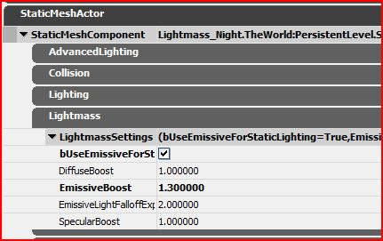
- DiffuseBoost(漫反射改进) -缩放应用到这个物体的所有材质的漫反射分布。
- EmissiveBoost(自发光改进) -缩放应用到这个物体的所有材质的自发光分布。
- EmissiveLightExplicitInfluenceRadius(自发光光源的直接影响半径) -直接光照影响半径。默认为0，意味着影响半径应该基于自发光光源的亮度自动产生。大于0的值将会覆盖自动产生的方法。
- EmissiveLightFalloffExponent(自发光光源衰减指数) -对于从这个图元的自发光区域创建的网格物体区域光源的直接光照衰减指数。
- FullyOccludedSamplesFraction(完全被遮挡的样本片段) - 为了达到完全遮挡，所采用的必须被遮挡的样本的部分。 这允许控制一个对象对其他对象的遮挡程度。
- bShadowIndirectOnly - 如果选中该项，这个对象将仅呈现间接光照阴影。这对于草来说是有用的，因为所渲染的几何体就是真是几何体的展现，不会不必要地投射精确形状的阴影。还个设置对于草来说有用的另一个原因是所获得阴影的频率太高以至于不能存储在预见算光照贴图中。
- SpecularBoost(高光改进) -缩放应用到这个物体的所有材质的高光分布。目前没有使用。
- bUseEmissiveForStaticLighting(静态光照是否使用自发光) -允许使用网格物体材质的自发光来创建Mesh Area Lights(网格物体区域光源)。
- bUseTwoSidedLighting - 如果选中该项，那么这个对象的照亮状态就像它的多变性两面都接收到光照一样。
基本的材质设置
要获得关于材质编辑器的更多信息请查看材质编辑器用户指南。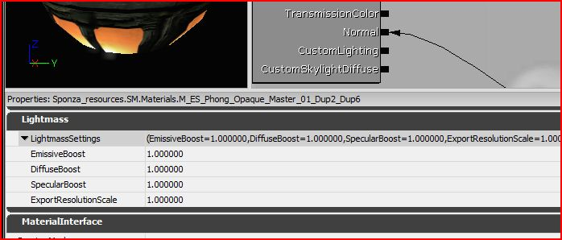
- EmissiveBoost(自发光改进) -缩放这个材质的自发光分布为静态光照。
- DiffuseBoost(漫反射改进) -缩放这个材质的漫反射分布为静态光照。
- SpecularBoost(高光改进) -缩放这个材质的高光分布为静态光照。
- ExportResolutionScale(导出分辨率缩放比例) -缩放这个材质的属性导出时所使用的分辨率。这对在需要细节时来增加材质的分辨率是有用的。
材质实例常量设置
要获得关于材质实例编辑器的更多信息，请查看材质实例编辑器用户指南页面。
- EmissiveBoost(自发光改进) -当勾选该项，将覆盖父项的EmissiveBoost。
- DiffuseBoost(漫反射改进) -当勾选该项，将覆盖父项的DiffuseBoost。
- SpecularBoost(高光改进) -当勾选该项，将覆盖父项的SpecularBoost。
- ExportResolutionScale(导出分辨率缩放比例) -当勾选该项，将覆盖父项的ExportResolutionScale。